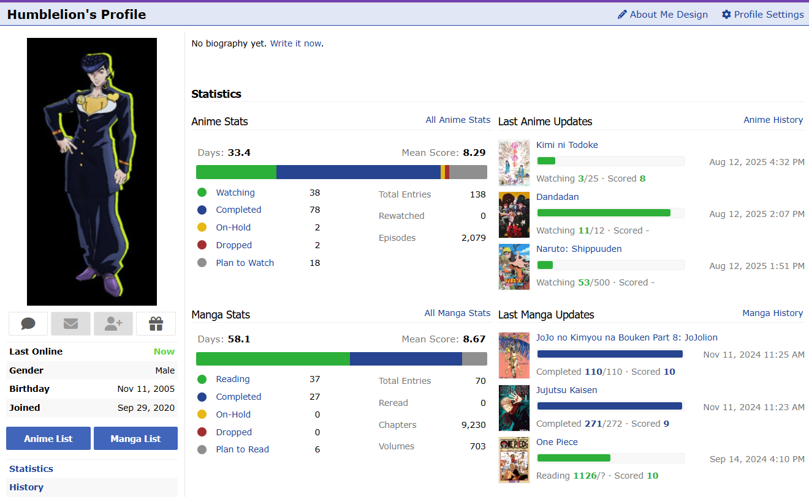

Every once in a while I get the thought, "Man. This thing is so amazing, I'm so good at it, if only I had done this earlier."
These thoughts completely left my brain when I opened my MyAnimeList last night.

58 days spent on Manga, 33 on Anime. I was hit by this statistic like a truck (an isekai truck).
I have spent a hundred complete days of my life watching and reading anime and manga. I have been alive for 20 years, I sleep for 8 hours a night, which would mean I must have spent a whopping 2% of my life on Japanese cartoons. Wow.
Obviously setting aside the mild inaccuracy in numbers, this would mean that we often spend time on things that may seem inconsequential, and a waste of time looking back. There were times when I felt that I had smooth-brained myself by not spending all my free time on math prep, or I should have been on codeforces instead of manganelo back in the 9th grade, or I should have been designing PCBs instead of sketching landscapes back in the 10th grade (you get the gist of it).
Life is actually pretty simple, if you start specializing earlier, you can get exponentially more successful. Learning abacus in primary school helped in winning math olympiads in middle school — but life isn't really an optimization problem. It is equally important to remember my goal at that time in life wasn't to become an engineer at Google or a quant at Jane Street. I think back deeper, and I remember that kid who wanted to be an artist, then that kid who wanted to be a storyteller, the science student who thought he should make a manga about basketball. Reading books all throughout my life helped me connect with people from all walks of life.
We shouldn't disregard the broader exposure we get to life. Oftentimes, I see solutions to problems that I encounter in my work and studies from visions of my past, and sometimes in my dreams. There's a famous story that August Kekulé saw the structure of benzene in a daydream of a snake biting his own tail.
I wouldn't say I am a particularly gifted engineering student, but I know how to work hard enough, how to deal with other people, and how to deal with others' ambition while not losing my own. I would say this is a skill I developed only through watching TV, and then trying to apply the principles I could figure out onto my teammates and opponents in sports and debates in school. Knowing how other people felt about my actions was a skill that I developed from reading books. Both these skills are valuable in any domain, so I would say my time wasn't wasted.
And who knows — maybe the only reason I decided to pursue engineering is because I saw Dr. Stone, and the only reason I'm interested in Macroeconomics and History is because I read Billy Bat?